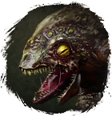
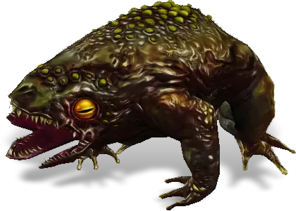

Открыть в интерактивной вики →

| Уровень | лёгк. 45 / норм. 45 / тяжел. 55 |
|---|---|
| Зоны атаки | ближняя, дальняя, ментальная |
| Шанс дропа 100% — уровни | лёгк. 1-40 / норм. 1-40 / тяжел. 1-50 |
| Шанс дропа 90% — уровни | лёгк. 41-50 / норм. 41-50 / тяжел. 51-60 |
| Шанс дропа 70% — уровни | лёгк. 51+ / норм. 51+ / тяжел. 61+ |
| Группа боссов | Непокой |
| Сила (PvE) | норм. 1031 / тяжел. 1599 |
| Аспект арены | Hegun |
| Здоровье | лёгк. 3700 / норм. 3700 / тяжел. 6300 |
| Мана | 2000 |
| Выносливость | 2000 |
Локация
- Болото Жабы
- Жабий рай
Навыки


Дроп
 Элементарный глиф
Элементарный глиф  Ученический глиф
Ученический глиф  Малая Фляга Мощи
Малая Фляга Мощи  Малая Фляга Силы
Малая Фляга Силы  Малая Фляга Здоровья
Малая Фляга Здоровья 
 Путь непокоя
Путь непокоя 
 II
II 
 Даймонит 1
Даймонит 1 | Рары | Синергетики | Эпики | |||
 Рары Рары  Рары Рары  Рары Рары  Рары Рары | 20-30 ур. |  Эпики Эпики | |||
Прочее:  Кварцевый ингибитор Кварцевый ингибитор  Малая Фляга Мощи Малая Фляга Мощи  Малая Фляга Силы Малая Фляга Силы  Малая Фляга Здоровья Малая Фляга Здоровья  Элементарный глиф Элементарный глиф  Ученический глиф Ученический глиф  Путь непокоя Путь непокоя | |||||
Требования для входа
Путь по картам
Умения
- Кровотечение — рвота обычная атака
- Плевок
- Ядовитый щит